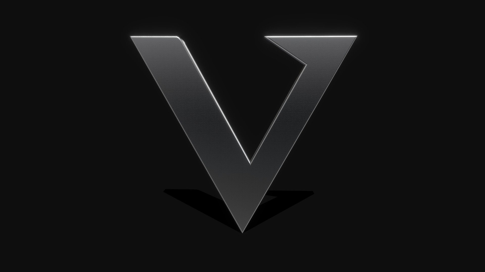

Compare the vectorized SVG against the source JPEG

Source JPEG
Detailed SVG (metallic)
Foil-Ready SVG
Overlay Comparison
Refinement: Edit the V_OUTLINE coordinate array
in scripts/generate-verse-logo.py,
then re-run the script to regenerate. Use the overlay slider above to compare alignment.